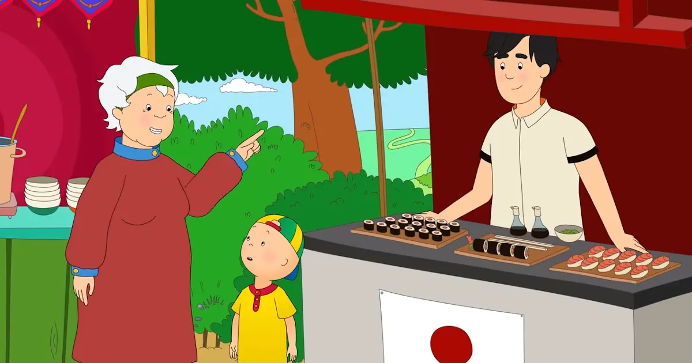

アニメで英語学習！Caillouが寿司を食わず嫌い
 Caillou and Valentine’s Day | Caillou Cartoon - YouTube
カイユーが寿司を食べなかった。生魚と聞いただけで拒否反応を示した。
Caillou didn’t like the sound of raw fish one bit.
カイユーと祖父母は公園で催されている国際食の博覧会に赴く。前の話がピクニックで野山の背景を使い回しており祭典らしさはない。YouTubeで新しく公開されているCaillouはアニメ自体の質が大幅に劣化している。やっつけ仕事なので動きが少なくアニメーションとして面白くない。彩色も素人の仕事だ。
カイユーはメキシコ料理の露天でタコスを食べる。タコスの説明はある。しかしトルティーヤに何を挟んでいるのかわからない。
Taco has a hard crunchy shell on the outside and a tasty on the inside.
Wikipediaによると肉と野菜が挟んであるようだ。
Tacos are filled with a variety of filling such as beef, chicken, fish, pork, cheese, lettuce, onions, guacamole.
Taco - Simple English Wikipedia, the free encyclopedia
カレーの露天ではスパイシーとマイルドを注文する。祖父はスパイシーカレーを頬張り顔が真っ赤になる。カイユーは祖母のマイルドを一口だけ食べる。
Caillou felt a little tingling in his mouth from spices but it didn’t make his face turn red like grandpa.
寿司は匂いを嗅ぐだけでカイユーは食べようとしない。祖父に試してみろと言われても拒否する。この手の食わず嫌いは一口だけでも食べさせるべきだ。口に含むだけでも想像していたものと違うことが明らかになる。
It’s too weird. I can’t eat it grandpa.
寿司を食べないので祖父はスパゲティを与える。カイユーの大好物なのだ。国際食というテーマが吹き飛んで炭水化物で腹を満たすだけとなってしまった。アニメの質も低いがストーリーも薄っぺらい。